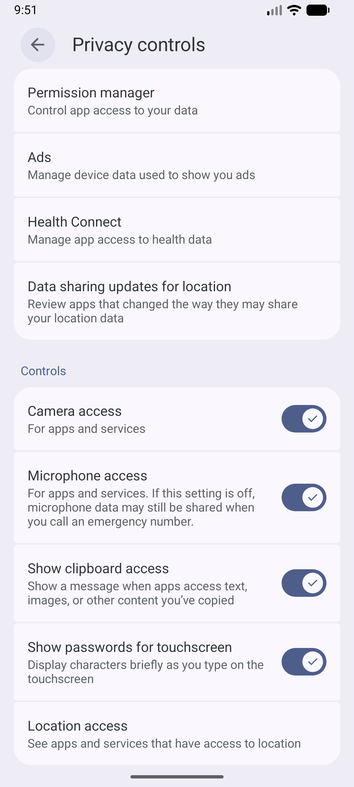
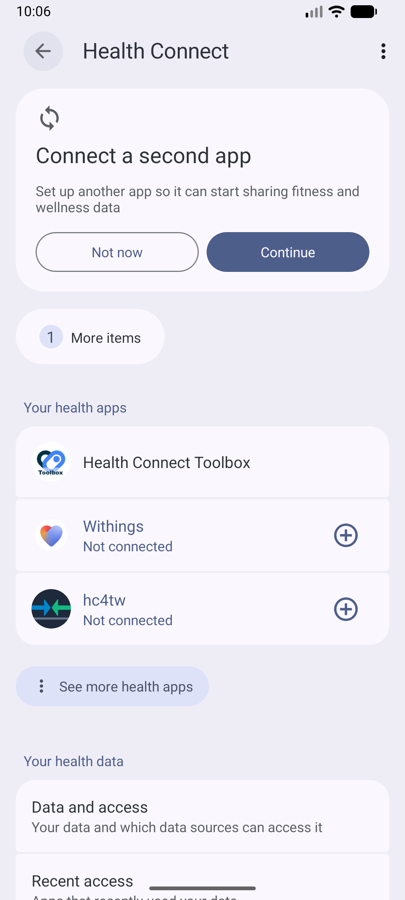
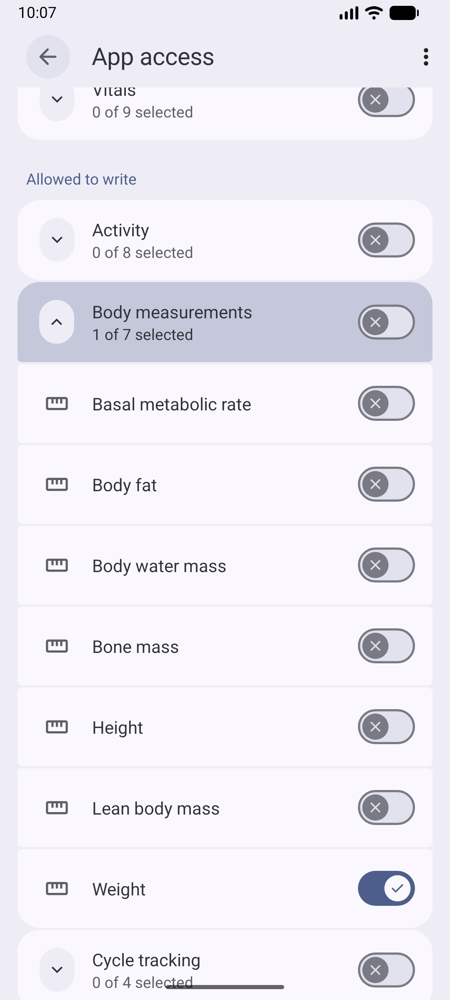
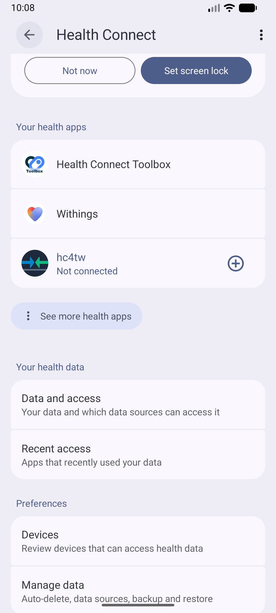
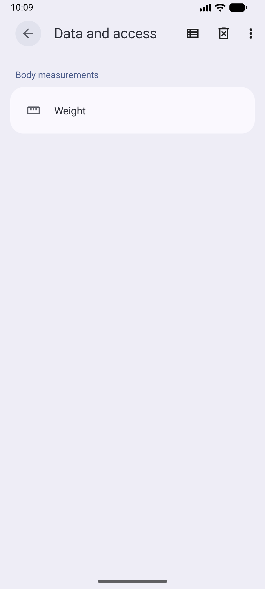
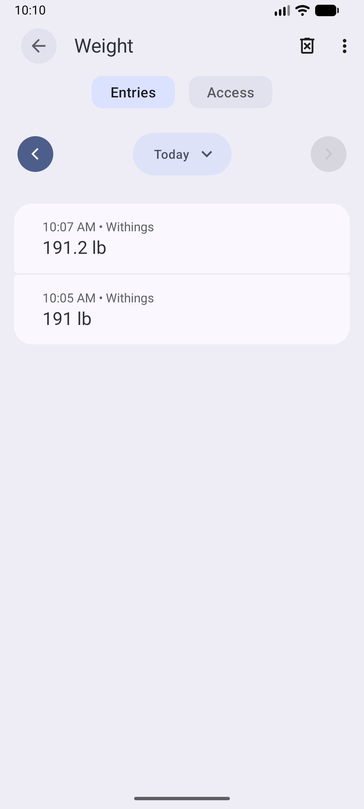

Setup Guide: Connect Your Logging App to Health Connect & hc4tw
Overview: Follow this visual walkthrough to configure your scale or logging app (Withings, Fitbit, Garmin, etc.) to write weight measurements to Android Health Connect so that hc4tw can read and synchronize them to TrendWeight.
1
Open Health Connect Settings
On your Android device, go to Settings > Security & privacy > Privacy > Health Connect (or open the standalone Health Connect app).

2
Select Your Logging App
Your health apps lists installed health apps on your phone. Select your scale or weight logging app.

3
Allow Write Access for Weight
Ensure that Weight (and optionally Body fat) under Allowed to write is enabled so your app can save measurements to Health Connect (make sure you look under Allowed to write, and not under Allowed to read).

4
Inspect Your Health Data
Return to the main Health Connect screen and tap Data and access (or Your health data) and verify that you can see your weight records in Health Connect.

5
Open Weight Measurements
Under Body measurements, select Weight.

6
Verify Your Daily Weigh-In Entry
Confirm that your weigh-in recorded by your scale or logging app appears in Health Connect's entry list for Today.

7
Sync to TrendWeight with hc4tw
Open the hc4tw app on your phone and tap Sync Now. hc4tw will read your weigh-in from Health Connect and instantly synchronize it to your TrendWeight chart!